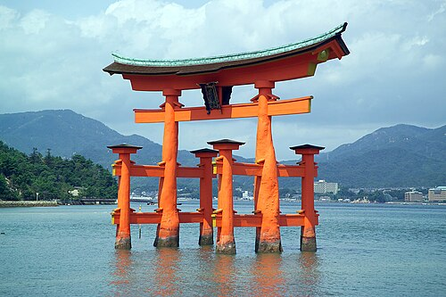
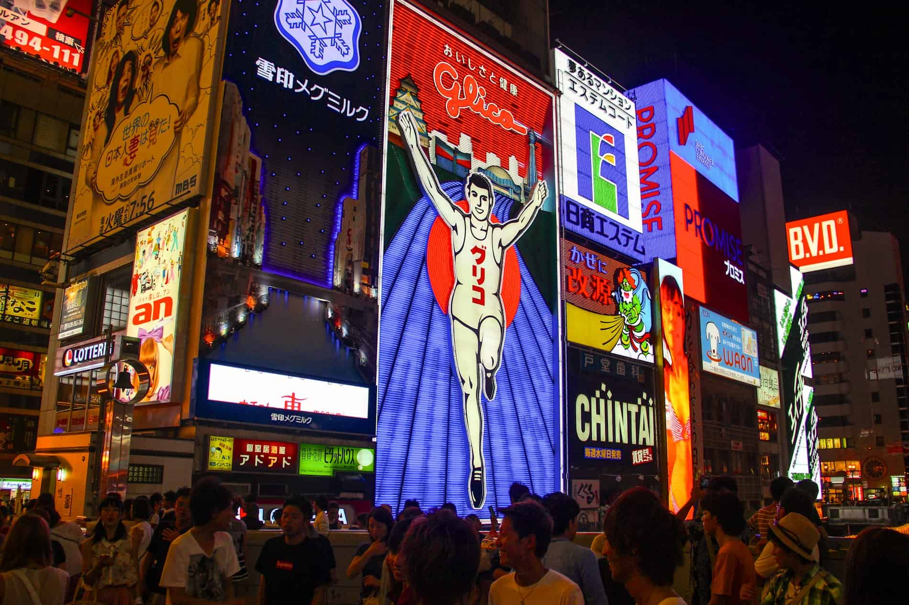

Tokyo et sa riche culture qui dépasse grandement le passé et le futur !
LE JAPON

Le portail Torii (torī)
Visitez le célèbre portail traditionel japonais, le "torī", avec son bois peint en vermillon. Composé de deux montants verticaux supportant ses deux linteaux horizontaux prouvant son ancienneté incontestable.
À Osaka
Troisième plus grnade ville du Japon, ville décontractée et détendue, ainsi que ses monuments historiques et ses quarties animés.


La Tour de Kyoto
La Tour de Kyoto qui est impressionnante du haut de ses 131 mètres. Montez au haut de la tour, construite sur le toit d’un bâtiment, et admirez le panorama à 360° degrés sur la ville.